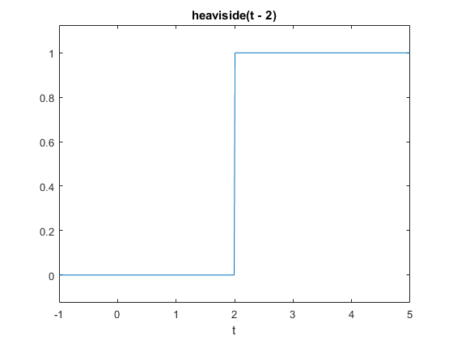
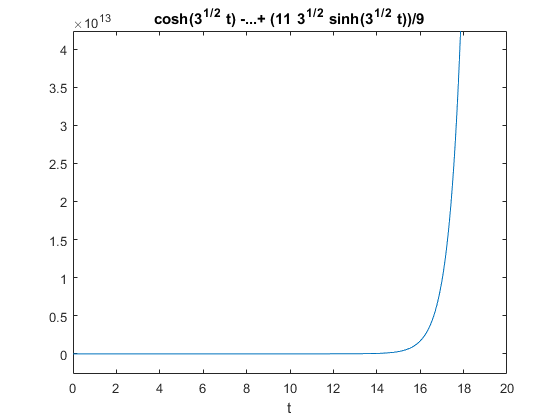
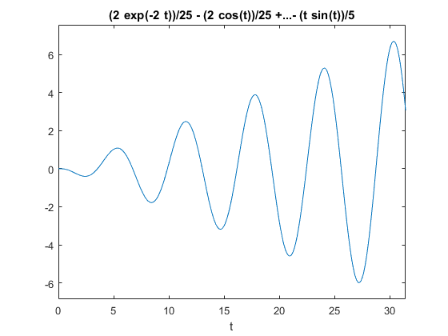
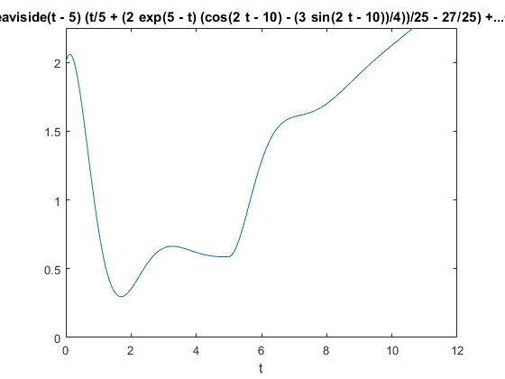

Laplace Transform Lab: Solving ODEs using Laplace Transform in MATLAB
This lab will teach you to solve ODEs using a built in MATLAB Laplace transform function laplace.
There are five (5) exercises in this lab that are to be handed in. Write your solutions in a separate file, including appropriate descriptions in each step.
Include your name and student number in the submitted file.
Contents
Student Information
Student Name: Patricia Nadia Krisanti
Student Number: 1009669404
Using symbolic variables to define functions
In this exercise we will use symbolic variables and functions.
syms t s x y f = cos(t) h = exp(2*x)
f = cos(t) h = exp(2*x)
Laplace transform and its inverse
% The routine |laplace| computes the Laplace transform of a function
F=laplace(f)
F = s/(s^2 + 1)
By default it uses the variable s for the Laplace transform But we can specify which variable we want:
H=laplace(h) laplace(h,y) % Observe that the results are identical: one in the variable |s| and the % other in the variable |y|
H = 1/(s - 2) ans = 1/(y - 2)
We can also specify which variable to use to compute the Laplace transform:
j = exp(x*t) laplace(j) laplace(j,x,s) % By default, MATLAB assumes that the Laplace transform is to be computed % using the variable |t|, unless we specify that we should use the variable % |x|
j = exp(t*x) ans = 1/(s - x) ans = 1/(s - t)
We can also use inline functions with laplace. When using inline functions, we always have to specify the variable of the function.
l = @(t) t^2+t+1 laplace(l(t))
l =
function_handle with value:
@(t)t^2+t+1
ans =
(s + 1)/s^2 + 2/s^3
MATLAB also has the routine ilaplace to compute the inverse Laplace transform
ilaplace(F) ilaplace(H) ilaplace(laplace(f))
ans = cos(t) ans = exp(2*t) ans = cos(t)
If laplace cannot compute the Laplace transform, it returns an unevaluated call.
g = 1/sqrt(t^2+1) G = laplace(g)
g = 1/(t^2 + 1)^(1/2) G = laplace(1/(t^2 + 1)^(1/2), t, s)
But MATLAB "knows" that it is supposed to be a Laplace transform of a function. So if we compute the inverse Laplace transform, we obtain the original function
ilaplace(G)
ans = 1/(t^2 + 1)^(1/2)
The Laplace transform of a function is related to the Laplace transform of its derivative:
syms g(t)
laplace(diff(g,t),t,s)
ans = s*laplace(g(t), t, s) - g(0)
Exercise 1
Objective: Compute the Laplace transform and use it to show that MATLAB 'knows' some of its properties.
Details:
(a) Define the function f(t)=exp(2t)*t^3, and compute its Laplace transform F(s). (b) Find a function f(t) such that its Laplace transform is (s - 1)*(s - 2))/(s*(s + 2)*(s - 3) (c) Show that MATLAB 'knows' that if F(s) is the Laplace transform of f(t), then the Laplace transform of exp(at)f(t) is F(s-a)
(in your answer, explain part (c) using comments).
Observe that MATLAB splits the rational function automatically when solving the inverse Laplace transform.
%a syms f(t) f2(t) f(t)=exp(2.*t).*t.^3 F=laplace(f(t)) %b f2(t)=((s - 1)*(s - 2))/(s*(s + 2)*(s - 3)) f=ilaplace(f2) %c h = @(t) t^2 H1 = laplace(h(t)) H2 = laplace(exp(3*t) * h(t)) % is H1 with s shifted by 3 (s-3) % it shows that MATLAB knows that the laplace transform of exp(at)f(t) is % F(s-a) because it outputs the same value of s in H1 and replace it by % (s-3) in H2 when the function is multiplied by exp(3t)
f(t) =
t^3*exp(2*t)
F =
6/(s - 2)^4
f2(t) =
((s - 1)*(s - 2))/(s*(s + 2)*(s - 3))
f(t) =
(6*exp(-2*t))/5 + (2*exp(3*t))/15 - 1/3
h =
function_handle with value:
@(t)t^2
H1 =
2/s^3
H2 =
2/(s - 3)^3
Heaviside and Dirac functions
These two functions are builtin to MATLAB: heaviside is the Heaviside function u_0(t) at 0
To define u_2(t), we need to write
f=heaviside(t-2) ezplot(f,[-1,5]) % The Dirac delta function (at |0|) is also defined with the routine |dirac| g = dirac(t-3) % MATLAB "knows" how to compute the Laplace transform of these functions laplace(f) laplace(g)
f = heaviside(t - 2) g = dirac(t - 3) ans = exp(-2*s)/s ans = exp(-3*s)
Exercise 2
Objective: Find a formula comparing the Laplace transform of a translation of f(t) by t-a with the Laplace transform of f(t)
Details:
- Give a value to a
- Let G(s) be the Laplace transform of g(t)=u_a(t)f(t-a) and F(s) is the Laplace transform of f(t), then find a formula relating G(s) and F(s)
In your answer, explain the 'proof' using comments.
syms g(t) f(t) a=5 u_a(t)=heaviside(t) g(t)=u_a(t-a).*f(t-a) G=laplace(g) F=laplace(f) %G(s) = exp(-as)*F %when shifted by t-a (shift to the right by a), the laplace transform %will also shift into the original laplace transform multiplied by exp(-as) %this agrees with the property of laplace transform as proven in tutorial
a =
5
u_a(t) =
heaviside(t)
g(t) =
f(t - 5)*heaviside(t - 5)
G =
exp(-5*s)*laplace(f(t), t, s)
F =
laplace(f(t), t, s)
Solving IVPs using Laplace transforms
Consider the following IVP, y''-3y = 5t with the initial conditions y(0)=1 and y'(0)=2. We can use MATLAB to solve this problem using Laplace transforms:
% First we define the unknown function and its variable and the Laplace % transform of the unknown syms y(t) t Y s % Then we define the ODE ODE=diff(y(t),t,2)-3*y(t)-5*t == 0 % Now we compute the Laplace transform of the ODE. L_ODE = laplace(ODE) % Use the initial conditions L_ODE=subs(L_ODE,y(0),1) L_ODE=subs(L_ODE,subs(diff(y(t), t), t, 0),2) % We then need to factor out the Laplace transform of |y(t)| L_ODE = subs(L_ODE,laplace(y(t), t, s), Y) Y=solve(L_ODE,Y) % We now need to use the inverse Laplace transform to obtain the solution % to the original IVP y = ilaplace(Y) % We can plot the solution ezplot(y,[0,20]) % We can check that this is indeed the solution diff(y,t,2)-3*y
ODE = diff(y(t), t, t) - 3*y(t) - 5*t == 0 L_ODE = s^2*laplace(y(t), t, s) - subs(diff(y(t), t), t, 0) - s*y(0) - 5/s^2 - 3*laplace(y(t), t, s) == 0 L_ODE = s^2*laplace(y(t), t, s) - subs(diff(y(t), t), t, 0) - s - 5/s^2 - 3*laplace(y(t), t, s) == 0 L_ODE = s^2*laplace(y(t), t, s) - s - 5/s^2 - 3*laplace(y(t), t, s) - 2 == 0 L_ODE = Y*s^2 - s - 3*Y - 5/s^2 - 2 == 0 Y = (s + 5/s^2 + 2)/(s^2 - 3) y = cosh(3^(1/2)*t) - (5*t)/3 + (11*3^(1/2)*sinh(3^(1/2)*t))/9 ans = 5*t
Exercise 3
Objective: Solve an IVP using the Laplace transform
Details: Explain your steps using comments
- Solve the IVP
- y'''+2y''+y'+2*y=-cos(t)
- y(0)=0, y'(0)=0, and y''(0)=0
- for t in [0,10*pi]
- Is there an initial condition for which y remains bounded as t goes to infinity? If so, find it.
syms y(t) t Y s % Then we define the ODE ODE=diff(y(t),t,3)+2*diff(y(t),t,2)+diff(y(t),t,1)+2*y(t)+cos(t) == 0 %y'''+2y''+y'+2*y=-cos(t) % Now we compute the Laplace transform of the ODE. L_ODE = laplace(ODE) % Use the initial conditions L_ODE=subs(L_ODE,y(0),0) L_ODE=subs(L_ODE,subs(diff(y(t), t), t, 0),0) L_ODE=subs(L_ODE,subs(diff(y(t), t, 2), t, 0),0) % We then need to factor out the Laplace transform of |y(t)| L_ODE = subs(L_ODE,laplace(y(t), t, s), Y) Y=solve(L_ODE,Y) % We now need to use the inverse Laplace transform to obtain the solution % to the original IVP y = ilaplace(Y) % We can plot the solution ezplot(y,[0,10*pi]) % Using arbitrary constants a, b, and c we can find the general % solution of the ODE % a*exp(-2t) +bcos(t)+c*sin(t)-t*sin(t)/5+t*cos(t)/10 % There's no initial condition for which y remains bounded as t goes to % infinity since when t approaches infinity y will continue growing while oscillating % -a*exp(-2t) will approach 0 % bcos(t) will oscillate will oscillate between b and -b % c*sin(t) will oscillate between c and -c % which means the final solution will oscillate % - t*sin(t)/5 + t*cos(t)/10 will diverge, this does not depend on % constants a, b, and c or the initial conditions % thus the final solution will oscillate while diverge, or in other words % growing while oscillating no matter the initial conditions
ODE = cos(t) + 2*y(t) + diff(y(t), t) + 2*diff(y(t), t, t) + diff(y(t), t, t, t) == 0 L_ODE = s*laplace(y(t), t, s) - y(0) - s*subs(diff(y(t), t), t, 0) - 2*s*y(0) - 2*subs(diff(y(t), t), t, 0) + s/(s^2 + 1) + 2*s^2*laplace(y(t), t, s) + s^3*laplace(y(t), t, s) - s^2*y(0) - subs(diff(y(t), t, t), t, 0) + 2*laplace(y(t), t, s) == 0 L_ODE = s*laplace(y(t), t, s) - s*subs(diff(y(t), t), t, 0) - 2*subs(diff(y(t), t), t, 0) + s/(s^2 + 1) + 2*s^2*laplace(y(t), t, s) + s^3*laplace(y(t), t, s) - subs(diff(y(t), t, t), t, 0) + 2*laplace(y(t), t, s) == 0 L_ODE = s*laplace(y(t), t, s) + s/(s^2 + 1) + 2*s^2*laplace(y(t), t, s) + s^3*laplace(y(t), t, s) - subs(diff(y(t), t, t), t, 0) + 2*laplace(y(t), t, s) == 0 L_ODE = s*laplace(y(t), t, s) + s/(s^2 + 1) + 2*s^2*laplace(y(t), t, s) + s^3*laplace(y(t), t, s) + 2*laplace(y(t), t, s) == 0 L_ODE = 2*Y + Y*s + s/(s^2 + 1) + 2*Y*s^2 + Y*s^3 == 0 Y = -s/((s^2 + 1)*(s^3 + 2*s^2 + s + 2)) y = (2*exp(-2*t))/25 - (2*cos(t))/25 + (3*sin(t))/50 + (t*cos(t))/10 - (t*sin(t))/5
Exercise 4
Objective: Solve an IVP using the Laplace transform
Details:
- Define
- g(t) = 3 if 0 < t < 2
- g(t) = t+1 if 2 < t < 5
- g(t) = 5 if t > 5
- Solve the IVP
- y''+2y'+5y=g(t)
- y(0)=2 and y'(0)=1
- Plot the solution for t in [0,12] and y in [0,2.25].
In your answer, explain your steps using comments.
% First we define the unknown function and its variable and the Laplace % transform of the unknown syms y(t) t Y s g(t) %g(t) = piecewise(0 < t < 2, 3 , 2 < t < 5, t+1, t > 5, 5) %g(t) = (3).*[heaviside(t)-heaviside(t-2)]+(t+1).*[heaviside(t-2)-heaviside(t-5)]+(5).*[heaviside(t-5)]; g(t) = (3).*(heaviside(t))+(t-2).*heaviside(t+3).*(heaviside(t-5)); %plot(t,y) % Then we define the ODE ODE=diff(y(t),t,2)+2.*diff(y(t),t) + 5*y(t) == g(t) % Now we compute the Laplace transform of the ODE. L_ODE = laplace(ODE) % Use the initial conditions L_ODE=subs(L_ODE,y(0),2) L_ODE=subs(L_ODE,subs(diff(y(t), t), t, 0),1) % We then need to factor out the Laplace transform of |y(t)| L_ODE = subs(L_ODE,laplace(y(t), t, s), Y) Y=solve(L_ODE,Y) % We now need to use the inverse Laplace transform to obtain the solution % to the original IVP y = ilaplace(Y) % We can plot the solution ezplot(y,[0, 12, 0, 2.25]) clear
ODE = 5*y(t) + 2*diff(y(t), t) + diff(y(t), t, t) == 3*heaviside(t) + heaviside(t + 3)*heaviside(t - 5)*(t - 2) L_ODE = 2*s*laplace(y(t), t, s) - 2*y(0) - s*y(0) - subs(diff(y(t), t), t, 0) + s^2*laplace(y(t), t, s) + 5*laplace(y(t), t, s) == 3/s + (exp(-5*s)*(3*s + 1))/s^2 L_ODE = 2*s*laplace(y(t), t, s) - 2*s - subs(diff(y(t), t), t, 0) + s^2*laplace(y(t), t, s) + 5*laplace(y(t), t, s) - 4 == 3/s + (exp(-5*s)*(3*s + 1))/s^2 L_ODE = 2*s*laplace(y(t), t, s) - 2*s + s^2*laplace(y(t), t, s) + 5*laplace(y(t), t, s) - 5 == 3/s + (exp(-5*s)*(3*s + 1))/s^2 L_ODE = 5*Y - 2*s + 2*Y*s + Y*s^2 - 5 == 3/s + (exp(-5*s)*(3*s + 1))/s^2 Y = (2*s + 3/s + (exp(-5*s)*(3*s + 1))/s^2 + 5)/(s^2 + 2*s + 5) y = heaviside(t - 5)*(t/5 + (2*exp(5 - t)*(cos(2*t - 10) - (3*sin(2*t - 10))/4))/25 - 27/25) + 2*exp(-t)*(cos(2*t) - sin(2*t)/2) - (3*exp(-t)*(cos(2*t) + sin(2*t)/2))/5 + (5*sin(2*t)*exp(-t))/2 - 3*heaviside(t - 5)*((exp(5 - t)*(cos(2*t - 10) + sin(2*t - 10)/2))/5 - 1/5) + 3/5
Exercise 5
Objective: Use the Laplace transform to solve an integral equation
Verify that MATLAB knowns about the convolution theorem by explaining why the following transform is computed correctly.
syms t tau y(tau) s I=int(exp(-2*(t-tau))*y(tau),tau,0,t) %f(t-Tau) = exp(-2*(t-tau)) , g(tau)=y(tau) L= laplace(I,t,s) L= laplace(int(exp(-2*(tau))*y(t-tau),tau,0,t),t,s) %H G=laplace(y(t), t, s) F=laplace(exp(-2*(t)), t, s) H=F*G % as shown by the answer, the solution to the laplace of the integral of % f(t-tau)g(tau) dtau is equivalent to the laplace of f(t) * laplace of g(t) % which satisfies the convolution theorem that states that Laplace transform of a convolution integral is equal % to the product of the individual Laplace transforms of the functions involved.
I = int(exp(2*tau - 2*t)*y(tau), tau, 0, t) L = laplace(y(t), t, s)/(s + 2) L = laplace(y(t), t, s)/(s + 2) G = laplace(y(t), t, s) F = 1/(s + 2) H = laplace(y(t), t, s)/(s + 2)